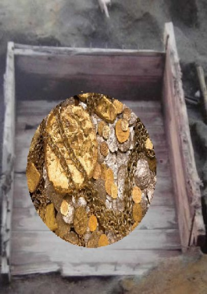

| ⑫カワウソのウッソー | |
| 深川龍 | |
| UNKNOWN (2016) | |
第十二話
お寺の暮れ六つの鐘がぐうぉんー、ぐうぉんーと鳴るころ、庄屋は領主の住む菰野城からもどって来たのじゃった。初夏のこととて、空には未だ、お日様が残ってござった。
「奥ざしきにツルを呼んでくじゃれ。とくべつの用事じゃと申してな。」
とくべつの用事とは何か、庄屋の娘はおおよその見当がついておった。庄屋の妻はいやがる娘を座敷の廊下につれてきた。
「おまえも年頃じゃ。お婿さんを迎えねばならん。」
娘は黙ってうつむいている。大方こんな話じゃろうと思っていたのだ。庄屋はできるだけ穏やかな笑顔をつくった。
「ご領主さまの三男で、三於様はどうじゃ。三於様なら、おまえも知っていよう。むかしお城に上がったとき、一緒に遊んだではないか。おまえのことは内々、ご領主さまにもお話がしてあったんじゃ。」
ツルは少し、顔を上げた。細面の美しい顔立ちじゃった。
「三於様は乱暴なお方ゆえ、きらいじゃ。婿をとるなら太助がいい。」
庄屋は顔を曇らせた。太助は貧しい水呑み百姓の小伜じゃったが、気立ての良いやさ男じゃった。村の娘たちは太助に恋いこがれてしもうた。庄屋の一人娘のツルも太助が大好きじゃった。
「おまえと太助では身分が違うじゃろう。三於様は勇敢なお方じゃ。戦で手がらを立てられて、やがては大きな国の大名になられるじゃろう。さすれば、往く往くはおまえも大名の奥方と言うもんじゃ。」
ツルの握りしめている小さなこぶしが微かにふるえた。
「いやなものは、いやじゃ。」
娘はがんとして首を縦にふらない。庄屋は仕方なく、妻にあたる。
「だいたい、おまえが甘やかして育てるからいかんのじゃ。せっかく、三於様が養子に来て下さると言うのに。」
庄屋の口の両わきには唾が白い泡になってたまっておった。残念でならないのじゃった。
「あんたこそ、甘やかしているくせに。ツルがいやなら仕方がないでしょう。」
村人に恐れられている庄屋も妻と娘にはかなわん。
カワウソのウッソーは庄屋の屋敷の池に忍び込んで、それらの会話を聞いてしまった。ツルはきれいで心もやさしかったから、ウッソーもツルが大好きじゃったが、
何せ、ツルは太助に夢中じゃったから、太助がけなりいてならなんだ。太助を陥れる何かよい勘考はないものかと思案したもんじゃ。
「そうじゃ。大川からご禁制の鱒をとって、太助の仕業に見せかけよう。」
ウッソーは独言を言うと、さっそく、太助に化けて大川にでかけた。お日様は沈んだばかりじゃった。
庄屋は朝と夕べ、決まって大川を見回ることにしておった。太助に化けたウッソーはその頃を見はからって、大川の中に入った。
庄屋が渋い顔をして通りかかった。ウッソーが大きな鱒を捕まえて抱え上げようとすると、鱒は水面ではねた。庄屋は物音に気づいた。
「太助、ご禁制の鱒を捕っておるな。ご領主さまに突き出してやる。」
太助を罪人としてお城に送れば娘のツルも太助のことはあきらめ、三於様を婿に迎えるじゃろうと思うた。
ところが、カワウソのウッソーはうまくやったと思った瞬間、いつもの癖で尻尾を出して水面をぱしゃぱしゃとやってしもうた。
庄屋は思わず大きな声を出した。
「何じゃ、カワウソが太助に化けておったのか。」
声を聞きつけた庄屋の若い衆が大きな網を持って川に
入り、ウッソーを取り巻いた。さすがにウッソーも逃げられなんだ。捕まって川っぷちの檻に入れられてしもうた。
庄屋は捕まえたウッソーを見て、苦笑いをしたもんじゃ。
「太助だったら良かったものを。こいつは毛皮にしてご領主様に差し上げるしか仕方がなかろう。」
太助は川っぷちの小道を通りかかって捕まっているカワウソを見つけると、そっと夜中にやって来て、檻の閂を外した。
「さあっ、逃げるんじゃ。ぼやぼやしていると、毛皮にされるぞ。」
ウッソーは檻を出て逃げた。
「太助、借りが出来てしまったな。」
借りは早く返しておきたかった。翌日の朝早く、ウッソーはお礼に鱒でも捕まえて来てやろうと思うて、また、大川に出かけた。太助の母親が病気で鱒を食べたがっておるのを知っておったのじゃった。
今度はご領主様の三男の三於に化けた。ツルを三於にとられるのもいやじゃった。三於を陥れてやろうと考えたのじゃ。
又もや庄屋が通りかかった。
「ご禁制の鱒をとっておるのは誰じゃ。」
庄屋がよく見ると、今度は三於である。
「こりゃ、三於様でござりましたか。三於様では仕方がない。」
庄屋は意外にも頭をかいて、お辞儀をした。
ウッソーは庄屋に頭を下げられて、つい、ほんわかと良い気分になった。その途端、いつもの癖で尻尾を出すと、ぱしゃぱしゃとやってしまった。
「何じゃ、こりゃ。また、カワウソじゃないか。」
またもや、大きな網を持った庄屋の若い衆に捕まって、川っぷちの檻に入れられてしまった。今度は檻に錠がおろしてある。さすがに、太助も助け出すことが出来ない。
太助は庄屋の家の門口の木のかげで、ツルが出て来るのを待った。
「おツル様、庄屋様の腰にある鍵を取って来てくれませぬか。カワウソを逃がしてやりたいのです。」
ツルは太助の頼みなら、何でも聞こうと思うておった。夜中にそっと庄屋の枕元から鍵束を持ち出すと、月明かりの中を太助の所に出かけた。
「もうし、太助さん。鍵を持って来ましたぞえ。」
こうして、二人でウッソーを逃がしてやった。
翌朝、庄屋が起きると、檻の錠はおろしてあるが、中のカワウソは逃げた後じゃった。
「鍵はちゃんと枕元にある。どうして逃げたのか不思議じゃのう。カワウソは化けて煙にでもなったのじゃろうか。」
ツルはすまして、知らん顔をしておった。
美しい夕日が西の山に沈むころじゃった。その日、太助の家の裏を流れる小川から、ぱしゃぱしゃという音が聞こえるので、出てみるとウッソーが長い尻尾でおいで、おいでをしておった。
太助がついて行くと、ウッソーは古屋敷の中に入って行った。化け物屋敷として、皆が恐れて近づかないところじゃった。真っ赤な夕日が西の山に沈むころには屋敷の床下から金色や銀色に光る煙が出るのが見えるという

ことじゃった。灯りと言えばロウソクや灯明の時代じゃ。少しの光りでも金銀は光って見えたのじゃろう。人々はそれを妖怪の仕業じゃと言い合って恐れておった。
ウッソーはその光る煙が出るところへ太助を連れていった。よく見ると、差し込んだ夕日に照らされて、こぼれている砂金や銀が光っておるのじゃった。ウッソーはそこを前足でかりかりと掻いて見せた。
太助がそこを掘ると、埋められていた宝物がどっさりと出てきた。
「こりゃ、庄屋様に知らさねば。」
正直者の太助がウッソーを見ると、
「おまえはばか正直じゃ。」
と言わんばかりに、首を左右に振った。
「そうか。俺にだけ教えてくれたんか。そんじゃ、他人に知らせるわけにゃいかんのう。」
ウッソーは満足そうにうなずいた。上手くゆくときは何をやっても、こんなもんじゃ。
ご領主さまの三男じゃった三於様は間もなく戦で亡くなられ、大金持ちになった太助はツルを女房にして庄屋の跡を継いだということじゃった。
(完）
深川龍
歴史の女シリーズ⑩
も読んでください。
- 1 -